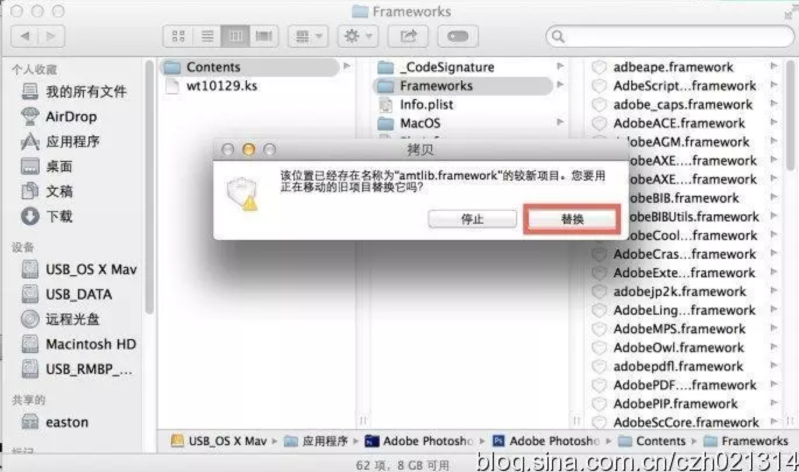

☰ 目录
安装破解教程
大家在Mac下肯定也少不了对图片进行修改，那也就少不了Photoshop这款软件。今天在这里分享下苹果下的Adobe PhotoshopCS6，这个软件大家应该都很熟悉，主要功能什么我就不多做介绍了。 软件下载准备 1.Adobe PhotoshopCS6https://pan.baidu.com/s/1boZWCzH2.破解工具https://pan.baidu.com/s/1mi4g0D6
自己的百度网盘： 2826112756@qq.com
破解步骤
1.首先断开网络连接，双击下载完成的PhotoShop dmg程序开始安装，如下图：

选择试用
我们点“试用”开始安装PhotoshopCS6

install
顺利安装完成之后，我们就要开始进行破解了。2.在应用程序文件夹，找到Adobe-Photoshop-CS6文件夹，在里面找到Adobe PhotoshopCS6.app，右键，选择显示包内容，如下图所示：

Adobe PhotoShop CS6 for Mac（苹果）中文破解版下载及破解方法
然后找到contents/framework文件夹，把刚才下载并解压的破解版 amtlib.framework拷贝进去，点全部替换原文件。替换前请先备份好你的原始文档amtlib.framework） 
OK,PhotoshopCS6 Mac版破解就完成。
参考： https://www.jianshu.com/p/647585fae033